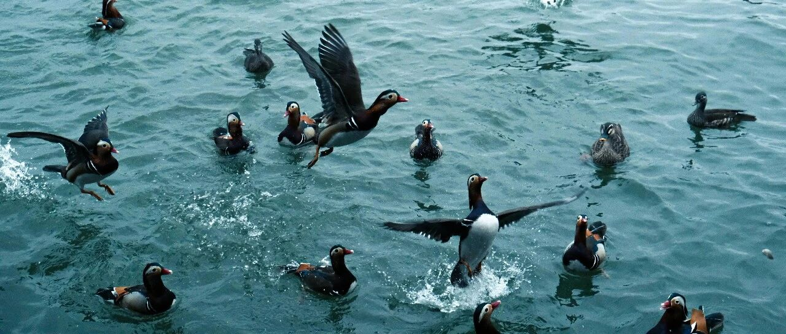

梦回2008~
联合健康继续跌，收盘价485.52美元。
之前设置的500成功买入，475没买到，盘中最低只到475.82美元。
目前潜在的利空，主要是由CEO被众生平等器送走后，老美社会大众对医疗保险的不满可能引发医疗保健股面临政策风暴。
目前设置的两个买入价位，一个是475，一个是450。
最近的生物医药板块也普遍低迷，之前提过，生物医药短期内低迷，最好往中长期持有的才考虑。
英伟达下跌1.22%，收盘价130.39美元，盘中一度出现了126.8美元的价格。
上一次英伟达出现127美元的价格，是10月初，也就是两个多月前。
之前也提过，震荡期有的是机会，耐住性子，不要着急。投资最重要的，除了资金，就是耐心和勇气。
英伟达往中长期看，短期内震荡反而是给机会，没什么好担心的。
特斯拉涨了3.64%，收盘价479.86美元，继续创新高。明年1月份，川普就职后，预计会走到情绪高点，我在那个时间点减仓一小部分的计划没变。
最近的微软每个交易日微涨，已接近修复历史高位的465美元，目前454美元。
其他的个股，大多数就那样，没什么好提的。
纳指和标普500上一个交易日创历史新高后，这个交易日小幅下跌0.3%+。
最近看着纳指一路站上20109.6，我有些感慨:
2009年3月，纳指1265点，到现在十五年多，一共涨了1489%；
2020年3月，纳指6631点，到现在4年多，涨了203%；
2022年10月，纳指10088点，到到现在2年多，涨100%；
如果是我买的纳指100，那这些年表现比整个纳指还更漂亮，因为投资属性更强。
我的账户，指数主要是纳指100和标普500这两个，此外，个人账户都是科技股，集中在美股七巨头+台积电，家庭账户的个股也是科技股占比第一，消费股第二，生物医药股第三。
偏爱科技股，确实给我带来了丰厚的回报。我从一开始的恐高恐跌，到后来的逢跌就买，越跌越买。
美股七巨头这类，大多数不需要依赖重资产就可以获得非常高的毛利，吃整个世界经济增长的红利，ROE大多数都大于20%，因为几乎全是平台型/垄断型科技企业。
什么叫选择比努力重要？比如都是做投资，我选的是美股，你选择的A股:
前者越努力投入，大概率赚的越多；后者越努力投入，大概率亏得越多。
这就是选择的重要性。就像两年前，我开始写这个公众号，选择跟上投资步伐并不乱折腾的人，和选择相信美股即将崩溃的而站一旁观望的，境况是完全不一样的。
美股高吗？高，但大概率还是会继续高，我也恐高，但还是选择走下去，置身事内，降低成本，控制风险，给自己更多更大的操作空间。
钓鱼，最重要的是出发站在河边钓，而不是空想。
我也希望美股来一场08年式的大暴跌，梦回2008，这样才有机会抄底，但很难。
手头准备的弹药一直在等，不知道什么时候能用上。但需要用的时候，一定要有。
对投资来说，哪一步走对了，都能少奋斗几十年；哪一步走岔了，可能是踏入爬不出的深渊。所以风控意识一定要有，风控措施一定要做。
人人都在命运里挣扎，人人都想尽办法，试图抓到一点确定的东西，像泰坦尼克的乘客，在大海里拼命游向一块门板。
总有的人觉得自己是命运的高级玩家，已经掌握了技巧，可以稳赚不赔。股民，总觉得自己并不是单纯的赌徒，自己是掌握得了大盘的。
唐僧西天取经，取的是五险一金，人家是混编制的。咱们没有这个命，得认清现实，做好投资风险的管控和应对。
投资是反人性的，所有的智慧是反本能的。
我家院子里有棵树，这些年我一直在观察它的生长，从不足1米，到现在3米多高。
树木的本能就是不断生长扩张，但它不明白，无节制的扩张会招来灭顶之灾，因此它没有智慧。
但倘若哪天它主动停止生长，并将那些不重要的枝干枯萎掉，那它就是窥得“天道”，长出了“智慧”。
可惜它做不到，因为这反本能，需要智慧。
有的时候，掌握“度”很重要，过犹不及。放在投资中来说，具体表现形式就是投资的应对方式和手段。
不追高，逢高减仓，降低成本，撑大空间；不怕跌，逢低买入，永远预留好仓位和资金。
“度”挺重要的，虽然我个人不相信进化论，但套用进化论来说，就像猴子进化到现在就刚刚好，再进化一点就要去上班了。
大道至简，所有事物的底层逻辑其实都是几句话的事儿。
在孩子的教育和未来规划上。
就是简单地希望他们能积极拥抱生活，体验生活，没有那么多烦恼和压力，去活出属于自己的人生。
我在这个基础上，引导和陪伴他们成长，尽力给他们创造理想的环境，学习成绩没有那么重要。
年轻时认为，教育是我们现代人进入职场和逆天改命的关键东西。
但30岁左右，我开始觉得，它更多的是一种秩序，一种把所有铁屑吸纳在磁石上的手段。
教育更多的，是划了一条道，并确保社会的绝大多数人都能沿着这条道走，以此能够极大的减少治理成本，也尽可能的消除了未来的不可预知和意外情况。
这几年，我有了更多时间去观察和陪伴三个孩子。多娃的家庭，我一开始觉得除了陪伴，还要一碗水端平，后来发现并不都是这样。
多娃家庭，相比绝对公平对待每个孩子，更重要的是让孩子觉得自己被偏爱，也就是在小孩看重的方向上给到满足。
这种被偏爱，不是建立在公平上的，而是建立在特殊上的:
有些事，我只会对老大做，不会对老二和小儿子做；还有些事，只会对老二和小儿子做，而不会对老大做。
老大喜欢吃苹果，老二喜欢车厘子，小儿子喜欢草莓，我媳妇喜欢蓝莓。我每次买，都会买这几样，然后递给他们每个人，告诉他们，这是给他/她买的。
每个人都得到了满足，每个人都觉得自己被偏爱，情绪价值拉满。他们需要的从来不是绝对公平、一碗水端平，而是偏爱。
低段位渣男，会公平对待每个女孩。高段位渣男就像段正淳，让每个女人都认为自己只爱她一个。
孩子们如今都有足够的安全感，并愿意为彼此付出。也对，不缺爱的人，才会主动付出爱，并乐在其中。
昨天跟我媳妇在感慨，以前都盼着孩子快点长大，现在都盼着孩子不要那么快长大。这三个小崽，之前还能亲亲抱抱，现在有的已经抱不动了。
不必盼着孩子长大，终有一天，他们会自己长大，离开父母的怀抱。
孩子带给我们最大的快乐，不是成绩，而是陪伴。与其对孩子寄予厚望，不如对自己寄予厚望。
就这样吧。